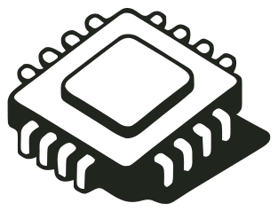
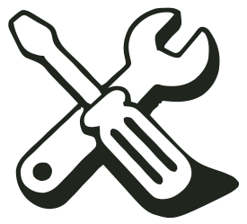
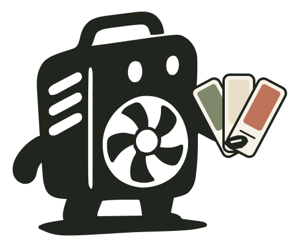
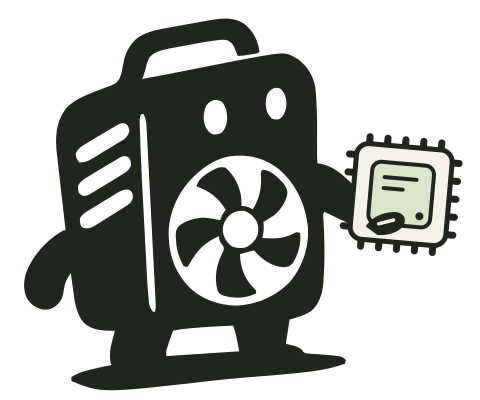
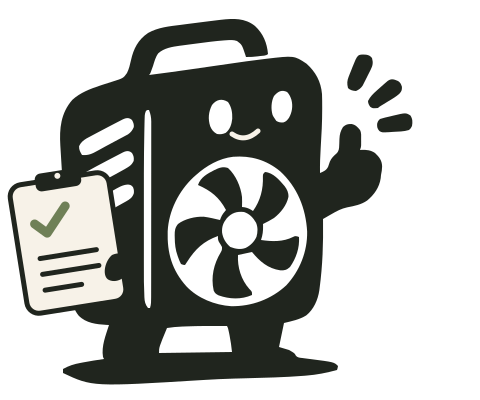

Ваш характер.
Наша сборка.
Подберём комплектующие, соберём и проверим. А если хочется своего — напечатаем корпус в ваших цветах.
В каждой детали.

Подберём начинку
Под ваши задачи и бюджет
Напечатаем характер
Материал, цвет и детали на выбор

Соберём и проверим
Укладка кабелей и проверка под нагрузкой
С чего начнём?
Нужен компьютер целиком или только новый дом для ваших комплектующих?
От конструктора
до вашей двери.
Всё оформляется на сайте — без звонков и переписки. Предоплата — 50%, остальное — при получении.
- 01 Настраиваете сборку в конструкторе
- 02 Оформляете заказ и вносите 50%
- 03 Мы собираем, проверяем и доставляем
Соберём ваш корпус.
Выберите материал, цвета и охлаждение. Остальное поможем продумать.



Начните с цветов. Я покажу, как будут сочетаться рама и панели.
Мои сборки
Сборки хранятся в этом браузере. Откройте любую в конструкторе, скопируйте или скачайте JSON, чтобы поделиться ею или перенести на другое устройство.
Здесь будут ваши сборки.
Настройте первый вариант в конструкторе и сохраните его. Или начните с импорта JSON.